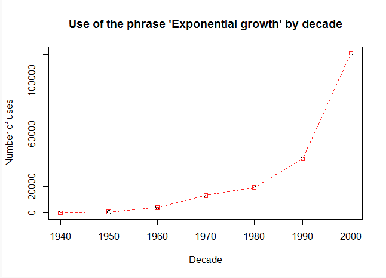

Clojure
UNLEASH THE POWER WITHIN(11 years and counting, a tribute)
fby.by 2019 - Мінск, Беларусь
About @reborg
- Dev at http://droit.tech
- Regulations as a service
- It’s mainly a Clojure (and other FP) shop
- We’re hiring! (NYC/London, please ask)
- Organiser of Papers We Love London
- Clojure Pills screencast on YouTube
- http://github.com/reborg/parallel
We know the basics already
- It’s a Lisp! It’s functional!
- First class persistent data structures
- Great JVM interoperability
- Concurrent and generally fast
- REPL, macros and much more…
Reflecting on 11 years of Clojure
- Innovation, impact, expressiveness…
- What was Clojure able to achieve?
- When it wasn’t, why not?
- The list is long (and subjective)
A word about the examples/demo
- I’m mainly searching for the principles
- Code shown could be about initial sketches
- For any serious development go to latest!
- Hang tight! We are going to cover a lot.
2008-2010: Origins.
- Compojure (2008) and Ring (2009)
- Leininghen (2009)
- Cascalog (2010)
- -> Core.Logic (2010)
Compojure
(defroutes app
(GET "/:x/:y"
[x y :<< #(Integer/parseInt %)]
"<h1>Hello World</h1>")
(route/not-found
"<h1>Page not found</h1>"))Leiningen
(defproject clojure-unleash-power-within-talk "0.1.0-SNAPSHOT"
:description "Slides and examples."
:url "github.com/reborg/clojure-unleash-power-within-talk"
:license {:name "Eclipse Public License"
:url "http://www.eclipse.org/legal/epl-v10.html"}
:jvm-opts ["-Xmx1g" "-server"]
:dependencies [[org.clojure/clojure "1.10.0"]
[org.clojure/core.async "0.4.490"]
[org.clojure/core.logic "0.8.11"]
[criterium "0.4.4"]])Cascalog
(?<- (stdout)
[?word ?count]
(sentence ?line)
(tokenise ?line :> ?word)
(c/count ?count))Core.Logic
- Logic programming implementation (miniKanren)
- Express programs in terms of “relations”
- Prolog-like approach to problem solving
- A tree walk of substitution chains
Core.Logic Demo
- Start REPL
- Open
src/corelogic.clj - Evaluate snippets on the fly
- Deeper look:
src/corelogic_basic.clj - Bonus:
src/sudoku.clj
Core.Logic Resources
2011: Let the fun begin
Midje
(facts "about migration"
(fact "Migration produces a new left and right map"
(migrate {:a 1} :a {})
=> {:new-left {} :clashes #{} :new-right {:a 1}})
(fact "multiple keys can be moved at once"
(migrate {:a 1, :b 2} :a :b {})
=> {:new-left {} :clashes #{} :new-right {:a 1 :b 2}}))Storm
(topology
{"1" (spout-spec sentence-spout)
"2" (spout-spec (sentence-spout-parameterized
["the cat jumped over the door"
"greetings from a faraway land"])
:p 2)}
{"3" (bolt-spec {"1" :shuffle "2" :shuffle}
split-sentence
:p 5)
"4" (bolt-spec {"3" ["word"]}
word-count
:p 6)})Pallet
(defn tomcat-deploy
"Tomcat deploy as ROOT application"
[request path]
(-> request
(tomcat/settings {})
(tomcat/deploy "ROOT" :local-file path :clear-existing true)))
(defn haproxy
"haproxy server with app1 on port 80."
[request]
(-> request
(haproxy/install-package)
(haproxy/configure
:listen {:app1 {:server-address "0.0.0.0:80"
:balance "roundrobin"}})))ClojureScript 1/2
- Initial concept late 2008
- Officially reworked in 2011
- A Clojure to JavaScript compiler
- Core functionality in ~350 LOC
ClojureScript 2/2
- Standard parse-analyze-emit recursion
- The AST is Clojure data structures
- Heavy use of Clojure polymorphism
- The language becomes the DSL!
ClojureScript Demo
- Open up REPL
- (load-file “src/clojurescript.clj”)
- Follow examples at the bottom.
ClojureScript Resources
2012: Going enterprise.
- Core.Typed
- EDN
- Reducers
- -> Codeq
- -> Datomic
Core.Typed
Extensible Data Notation
- JS: https://github.com/shaunxcode/jsedn
- Go: https://github.com/go-edn/edn
- C++: https://github.com/shaunxcode/edn-cpp
- Haskell: http://hackage.haskell.org/package/hedn
- Scala: https://github.com/martintrojer/edn-scala
- ….
Reducers
(defn count-occurrences [words]
(r/fold
(r/monoid #(merge-with + %1 %2) (constantly {}))
(fn [m [k cnt]] (assoc m k (+ cnt (get m k 0))))
(r/map #(vector % 1) words)))
(defn word-count [s] (count-occurrences (s/split s #"\s+")))
(def war-and-peace "http://www.gutenberg.org/files/2600/2600-0.txt")
(def book (slurp war-and-peace))
(def freqs (word-count book))
(freqs "Andrew")Datomic
- Distributed, transactional, time-aware DB
- Database as immutable “value”
- Datalog query interface
- RDF inspired relations
- Efficient B-Tree implementation
Codeq
- Semantic analysis of source code
- Functional definitions as unit of change
- Based on Datomic
Datomic Demo
- Run
src/datomic.sh(done) - Open up browser at http://localhost:9256/browse
- Open
src/datomic.clj - And
src/datomic_codeq.clj

2013: Annus Mirabilis
LightTable
- Just a sec, making it bigger.
CinC (aka reader/analyzer/jvm)
(ast/nodes (analyze '[1 (+ 1 2)]))
({:op :vector,
:top-level true,
:items
[{:op :const,
:type :number,
:val 1,
...}
{:op :static-call,
:class clojure.lang.Numbers,
:method add,
:form (. clojure.lang.Numbers (add 1 2)),
:args ...,
...Om
(defui Hello
Object
(render [this]
(dom/h1 nil "Hello, world!")))
(def hello (om/factory Hello))
(.render js/ReactDOM (hello) (gdom/getElement "example"))Stuart Sierra Component
(defrecord Database [host port connection]
component/Lifecycle
(start [component]
(println ";; Starting database")
(let [conn (connect-to-database host port)]
(assoc component :connection conn)))
(stop [component]
(println ";; Stopping database")
(.close connection)
(assoc component :connection nil)))Core.Async 1/2
- Beginning of 2013
- Need for non-blocking “await” threads
- Inspired by F#, C# then Scala async/await
- Plus “Channels” from CSP
- Avoid ClojureScript/JS callback hell
Core.Async 2/2
- Transform blocking calls into state assignment
- Parse Clojure into SSA (Static Single Assignment) form
- Create a state for each await/pause/channel write/read
- Run thread (from pool) with callback into state
- Clojure macrology in action!
Core.Async Demo
- Open up REPL
- Open
src/coreasync.clj - Follow examples at the bottom.
- Open
src/coreasync_workers.clj - More examples at the bottom.
Core.Async Resources
2014-Today
- ClojureCLR (day 1)
- Arcadia (2014)
- Transducers (2014)
- Core.Spec (2016)
ClojureCLR
(definterface I1
(^Int32 m1 [^Int32 x ^String y])
(^Int32 m1 [^String x ^Int32 y])
(^Int32 m2 [^Int32 x ^String y]))
(definterface I2
(^Int32 m1 [#^Int32 x ^String y])
(^String m2 [#^Int32 x ^String y])
(m3 [x y]))Arcadia
- Just a sec, making it bigger.
Transducers
(def x-form
(comp
(comp (map inc)
(comp (filter even?)
(mapcat range)))
(partition-by #(< (apply + %) 7))
(comp (keep-indexed #(when (even? %1) (* %1 %2)))
(replace {2 "two" 6 "six" 18 "eighteen"}))
(take-while #(not= 300 %))
(drop 1)
(remove string?)))
(transduce x-form + (vec (interleave (range 18) (range 20))))Core.Spec
(def domain
(gen/fmap #(keyword "my.domain" %)
(gen/such-that #(not= % "")
(gen/string-alphanumeric))))
(gen/sample domain 5)
;; (:my.domain/O :my.domain/b
;; :my.domain/ZH :my.domain/31
;; :my.domain/U)What’s next? (IMHO)
- GraalVM
- Formal Verification/STM solvers
- Deep Learning/AI
- What’s the killer app?
~ Fin ~
- Questions?
…oh, the book!

- Clojure: The Essential Reference by Manning
- 800+ pages, 1500+ man/hours, 3 years effort.
- Writing last chapter!
- Get 42% discount with “ssborgatti”
- Thanks!
- Renzo (@reborg)